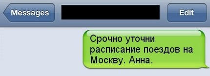
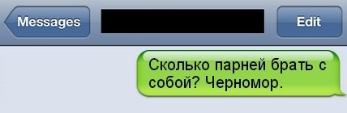
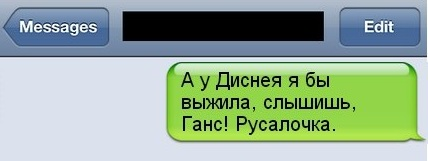
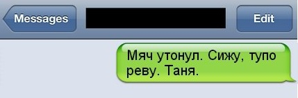

Если бы герои книг могли отправить sms
Сюжеты известных литературных произведений в жанре смс-переписки.
Возможность снять скриншот в айфоне породило новую традицию в сети. Фиксировать и выкладывать на свои страницы в соцсетях или в уже созданные паблики забавные моменты из своей или чужой sms-переписки. Сейчас уже выкладывают не только реальные диалоги, но и выдуманные. Например, смс-ки героев сказок, мифов и прочих литературных произведений.
Все могло бы быть иначе, если бы у этих персонажей была возможность отправить сообщение.
- 
- Что-то ты, Герасим, не договариваешь. Муму.
- Ты здесь? Я на третьем, давай пересечемся. Данте.
- Наф, мы на стройрынке, что брать? Ниф и Нуф
- Буду поздно, не забудь помолиться на ночь. Отелло.
- Горыныч, делай крылья, к тебе муромские с предъявой. Яга.
- Куплю стулья. Остап.
- 
- Мама, тут какой-то серый под окнами, говорит — доставка продуктов. На козла не похож. Мы заказывали? Твои козлята.
- Володя, во сколько стрелка? Место помню. Глеб.
- Емеля, до дворца не дошла, стою в пробке на невском. Печь.
- Прометей, я задержусь. Готовь печень. Орел.
- К чёрту кроликов, грибы и гусениц! Больше после обеда не сплю. Алиса.
- Тут сам черт ногу сломит! Воланд.
- 
- Дружище, давай в пятницу сходим в кабак, выпьем!? Я угощаю. Сальери.
- Твой хвост у Совы. Пух.
- Не там свернули. Бензин кончился, труба сейчас сдохнет. Сделай что-нибудь! Сусанин.
- Козел ты, Иванушка. Старшая сестра.
- Ребята, приезжайте скорей, знаю классное место для дайвинга. Саша Невский.
- 
- Платок и бусы купил. Ищу цветочек. Папа.
- Они тут все больные! Айболит.
- Муха, извини, задерживаюсь с вылетом. Пауку большой привет и приятного аппетита. Маленький комарик.
- Вскрытие показало, что пациент переедал. Лесорубы.
- Лебедь, щуку захвати, классно оттянемся! Рак.
- Подарок. В зубы не смотреть. Данайцы.
- Я его выбросил. Фродо.
- Сижу в тыкве, пью с крысами. Золушка.
- Эдгар! Убей себя ап стенку! Черный кот.
- Аслан, твои дети достали! Платяной шкаф оставляю тебе. Наслаждайся! Белая колдунья.
- Выехал из Трои. Пробки. Одиссей.
- Красавица, ты домой собираешься? Чудовище.